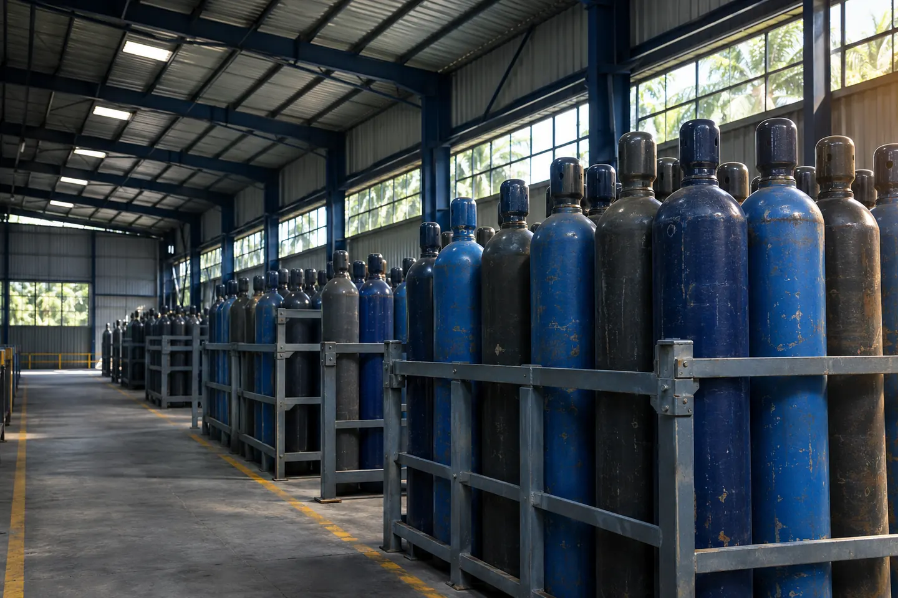

Industrial gases
Industrial oxygen
For industrial and fabrication requirements. Specify the application, grade, quantity and cylinder format when you contact us.
View detailsEstablished 1996 · Kalamassery, Kerala
Okay Group supplies gases and related equipment for industry, healthcare and specialist applications in Kerala.

Products
Industrial gases
For industrial and fabrication requirements. Specify the application, grade, quantity and cylinder format when you contact us.
View detailsHealthcare
Medical oxygen supply enquiries for hospitals and healthcare facilities, including cylinder and Dura-cylinder formats listed by Manorama Oxygen.
View detailsIndustrial gases
Carbon dioxide gas cylinders and liquid carbon dioxide. Confirm the grade and supply format for your application.
View detailsIndustrial gases
Gaseous nitrogen and liquid nitrogen. Tell us the required form, grade and quantity.
View detailsIndustrial gases
Commercial argon, high-purity argon and liquid argon are listed in the Manorama Oxygen catalogue.
View detailsDry ice
Solid carbon dioxide is listed in block form. Confirm quantity, collection or delivery arrangements, and timing with our team.
View detailsOur beginnings
Okay Group started with an oxygen manufacturing plant in Kalamassery, set up to supply medical oxygen in Kerala.
The group later expanded into other parts of Kerala and added acetylene and carbon dioxide operations. Manorama Oxygen Private Limited manufactures and supplies industrial and medical gases.
Read about the groupTell us the product, application, quantity and delivery location.